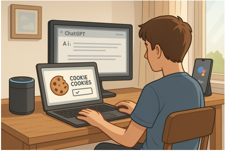
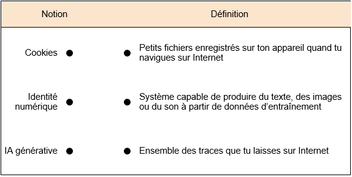
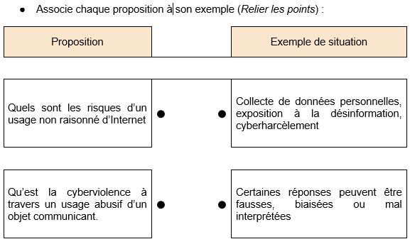
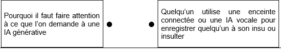
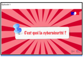
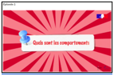
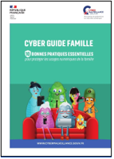

Séance 2:Le numérique au quotidien : savoir l’utiliser sans danger.
Aujourd’hui, les collégiens utilisent au quotidien Internet, des assistants IA comme ChatGPT, ou des objets connectés à la maison. Mais que se passe-t-il réellement lorsqu’on accepte des cookies, quand on partage une requête vocale, ou quand on copie une réponse d’IA sans vérifier ?

Mes constats, mes observations :
Mon problème à résoudre
Mes idées pour le résoudre
Activités (niveaux 1 et 2)
QCM/QCU / Associations
● Quel outil suivant est une IA générative ?
Google Home
Google Translate
ChatGPT
Wikipédia
● Quels éléments sont des objets communicants ?
Enceinte connectée
Calculatrice
Montre connectée
Imprimante 3D
● Associe chaque notion à sa définition (Relier les points) :



Ressources:
OST1l-Cybersécurité : protection des données personnelles, traces numériques
OST1m-Cyberviolence : usurpation d’identité, usage détourné

C'est quoi la cybersécurité ? Pourquoi c'est important ?

Quels sont les comportements à adopter sur les réseaux sociaux ?
Activités (niveaux 3 et 4)
Tu dois conseiller un camarade qui utilise une IA générative (comme ChatGPT) pour faire ses devoirs, une enceinte connectée pour piloter ses objets à la maison, et qui laisse son compte Google ouvert sur tous ses appareils.
Questions :
- Que peux-tu lui recommander pour sécuriser ses usages ? (choix multiple)
Choisir un mot de passe long et unique
Utiliser la navigation privée
Demander à l’IA de faire tous les devoirs sans les lire
Lire les conditions d’utilisation d’un site ou d’une IA
Ignorer les paramètres de confidentialité
- Propose un bon usage d’une IA générative dans un travail scolaire.
- Paramètre conseillé à désactiver sur une enceinte connectée pour protéger sa vie privée ? (Ressource “Que Choisir” ci-contre) ……………………………
Question d’analyse (scénario)
Un élève utilise une IA générative pour produire un texte qu’il remet tel quel au professeur, son enceinte connectée diffuse des informations personnelles à son insu, et il partage son mot de passe sur un jeu en ligne avec un camarade.
Question :
Quels sont les risques dans cette situation ? Quelles bonnes pratiques proposerais-tu pour adopter un usage raisonné du numérique dans ces trois cas ?
Réponse attendue :
…………………………… * …………………………… *
Ressources:

Enceintes connectées, comment protéger sa vie privée ?
Ma synthèse
1. Citer deux objets du quotidien que l’on peut classer comme “objets communicants” :
→ ……………………………
→ ……………………………
2. Donner un risque lié à l’usage d’une IA générative sans vérification :
→ ……………………………
3. Citer un paramètre à désactiver sur une enceinte connectée pour mieux protéger sa vie privée :
→ ……………………………
4. À ton avis, quelle est la règle la plus importante à retenir pour un usage raisonné du numérique ?
→ ……………………………
Ressources:
🧠 Teste tes connaissances
Réponds aux questions puis clique sur « Vérifier » — la correction s'affiche aussitôt.
1. Parmi ces outils, lequel est une IA générative ?
2. Lequel de ces éléments est un objet communicant ?
3. Quel est un risque si on utilise une IA générative sans vérifier ses réponses ?
4. Quel paramètre est conseillé de désactiver sur une enceinte connectée pour protéger sa vie privée ?
5. Que risque un élève qui partage son mot de passe avec un camarade sur un jeu en ligne ?
6. Quel est un bon usage d'une IA générative pour un travail scolaire ?